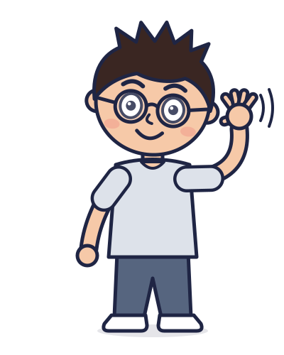
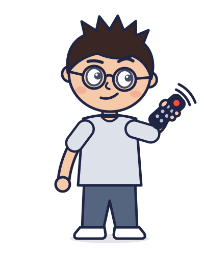
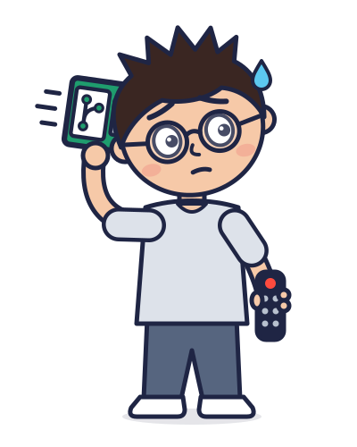
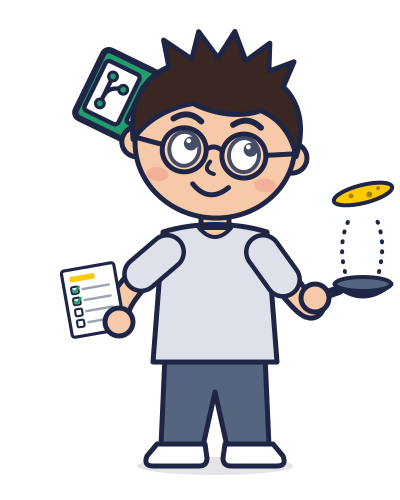

→ pour avancer · ← pour reculer · F pour le plein écran · N pour les notes
Qui a utilisé une IA cette semaine ?
… pour autre chose que poser une question ?
À la fin, tu sauras lancer un projet qui exploite vraiment l'IA, sur ton sujet de discovery.

Vois l'IA comme ton nouveau collègue
Il vient de rejoindre ton équipe. Il est brillant. On lui parle comme à un humain.
Pas comme à un système
irritants gestion stocks entretiens
Comme à un humain
Je prépare une discovery sur la gestion des stocks. Voici un document qui explique le contexte, et des verbatims d'entretiens. Regroupe-les par irritant, cite le verbatim qui appuie chaque groupe, et dis-moi ce qui manque pour conclure. Si un point n'est pas clair, demande-moi.
Brillant, mais il arrive les mains vides.
Il faut l'équiper, l'onboarder, et connaître ses traits de personnalité pour en tirer le meilleur.
À la base, il n'a qu'une tête
Il ne sait que réfléchir, même pas mémoriser. C'est le LLM : l'usage le plus basique, ChatGPT ou Gemini sur le web.
Tu peuxPoser des questions, reformuler un texte, trouver des idées.
Une petite évolution : le RAG
Il lit tes documents avant de répondre.
Exemple de RAGGemini Notebook
Tu peuxInterroger tes documents : synthétiser tes entretiens, retrouver une décision.
Problème
Ça reste une tête : il n'agit toujours pas.

Ajoute-lui un corps : tu obtiens un agent
Ce corps, c'est le harnais : il lit, écrit, lance des commandes, regarde le résultat, et recommence.
Exemples de harnaisClaude CodeCodexGitHub Copilot
Tu peux
Le faire agir dans tout ce à quoi tu as accès. Si tu l'autorises.
Tes outils
Tout le web, via ton navigateur
leboncoin
Problème
À chaque session, il faut tout lui redire. Et le reste de l'équipe ne peut pas lui parler.
Complète sa tête avec une mémoire
Il sait maintenant réfléchir et retenir : on enregistre des fichiers, qu'il saura relire.
Bien : sur ton ordinateur, pour travailler seul.
Mieux : sur GitHub, plus sûr et partagé avec l'équipe.
Tu peuxFaire du vibe coding : tu décris, il construit, session après session.

Problème
Il improvise : même demande, résultat différent.
Fais le compte rendu de la réunion.
Lundi
Décision : lancement repoussé au 12 mars.
Actions : Julie, les maquettes pour vendredi. Karim, le chiffrage pour mardi.
Jeudi
La réunion a permis des échanges riches autour du lancement. Plusieurs pistes ont été évoquées, et l'équipe reviendra sur le sujet prochainement.
Donne-lui un guide : les skills
Une recette écrite pour une tâche précise.
Exemples de skillsSynthétiser des entretiensRédiger une user storyÉcrire un compte rendu
Tu peux
Obtenir le même travail, bien fait, à chaque fois.
Comme dans ta cuisine : sans recette, il prend la première poêle venue et de l'huile. Avec la tienne, il fait tes crêpes, au beurre salé.

Problème
Des recettes partout : il ne sait plus où donner de la tête.
Une petite évolution : le framework de skills
Les recettes rangées en une méthode, avec des étapes et des rôles.
Exemples de frameworksBMADSpec KitGSD
Tu peuxDérouler toute une démarche, de l'idée à la livraison.
Problème
Il ne connaît rien de notre boîte.
Rends-le corporate avec la surcouche de ton entreprise
C'est le SDLC d'entreprise : il surcharge le framework avec ses conventions, son vocabulaire, ses skills.
Tu peuxLivrer un travail que l'équipe reconnaît comme le sien.
L'équiper, couche par couche
LLMPoser des questions
HarnaisAgir dans tes outils
MémoireVibe coder
GuideTravailler avec méthode
SDLC d'entrepriseLivrer comme l'équipe
Il connaît l'entreprise.
Pas encore ton projet.
Il faut l'onboarder.
Une image pour toute la présentation
Un nouveau stagiaire, chaque matin.
Brillant
Raisonne vite, comprend à demi-mot, pose de bonnes questions.
Amnésique
Chaque session repart de zéro. Rien n'est retenu d'hier.
Littéral
Il fait ce qu'on lui dit. Il faut préciser ce qu'on attend en sortie.
Donc : on le cadre, on lui fait écrire ce qui compte, on relit son travail et on corrige la cause de ses erreurs.
Sept temps
1La mécaniquePourquoi l'IA oublie
2La mémoireCe qui n'est pas commité est perdu
3Les sessionsUn objectif, une PR
4La méthodeUn cadre, pas une obligation
5La connaissanceOnboarder le stagiaire
6Le cadrageVocabulaire, langue, format
7La relectureCorriger la cause, pas le symptôme
LLM, harnais, agent : qui fait quoi ?
Comprendre pourquoi l'IA oublie explique toutes les autres pratiques.
LLM
Du texte en entrée, du texte en sortie. sans état
→
Harnais
Relance le LLM en boucle : réfléchit, lit des fichiers, appelle des outils.
Copilot, Claude Code…
→
Agent
Une session. Peut déléguer à des sous-agents.
Le prompt est une pile, reconstruite à chaque session
La réflexion vient du modèle. La connaissance métier vient de toi.
Entraînement du modèle pas à moi
Instructions globales mes préférences
agent.md du projet conventions d'équipe
Ce que je dis maintenant
Les deux couches du milieu, c'est toi qui les écris. Elles survivent d'une session à l'autre.
Ce qui n'est pas commité est perdu
La session oublie. Le repo se souvient.
Session 1
On discute, on décide.
→
PR
On commit ce qui compte.
→
Repo
agent.md et docs en .md
→
Session 2
Relit le repo, repart de l'état.
Fermer la session sans commiter : tout est oublié.
Où écrire quoi ?
Une seule source de vérité pour les instructions.
agent.md du projetConventions d'équipe, partagées et versionnées.
copilot-instructionsRenvoie vers agent.md : pas de doublon.
Une préférence change ? Demander à l'IA de l'enregistrer au bon endroit.
Une session, un objectif, une PR
Même logique que « un commit = une chose ».
Session
Un seul objectif.
→
PR
Tout est écrit.
→
Relecture
Puis merge.
↺
Session neuve
Mémoire à jour.
Session qui grossit : compaction arbitraire, qualité en baisse, coût en tokens en hausse.
Isoler le contexte
Moins de contexte pollué, moins d'hallucinations.
Sous-agents
Contexte propre et regard extérieur. Exemple : la review de code, lancée sans l'historique de la discussion.
Worktrees
Une copie du projet par session : plusieurs sessions en parallèle, sans toucher à ton local.
À nuancer. Le repère « ne pas dépasser ~25 % du contexte » est une recommandation, pas une règle.
Contre-exemple vécu : deux sujets dans une session, et la PR devient difficile à relire.
Skill, BMAD, SDLC : des recettes emboîtées
Un skill guide l'IA comme une recette : « chez moi, on cuit les pâtes dans cette casserole ».
SkillUne recette pour une action précise.
BMADDes skills orientés cycle de vie.
Brief→PRD→Architecture→Dev→Review
SDLC d'entrepriseBMAD plus les skills maison. Installé dans la première PR du projet, comme un npm install.
Un cadre, pas une obligation
Le bon niveau de méthode dépend de la tâche.
Invoquer explicitement
Sans cela, l'IA improvise sans utiliser les skills.
Pas toujours adapté
BMAD est verbeux, lourd pour de la discovery. Alternatives citées : GSD, Spec Kit.
Surcharger les défauts
Exemple : une review qui doit absolument trouver un défaut, même quand il n'y en a pas.
Modèle selon la tâche
Un modèle léger pour extraire, un plus fort pour raisonner.
Onboarder le stagiaire
Le coût est au départ. Ensuite, le repo se réutilise.
Sans cadrage : context poisoning
Un document vieux de six mois et des slides récents sont mis au même niveau. Les réponses se mélangent.
Dire ce qui est obsolète et quelle est la source de vérité.
Faire distinguer fait vérifié, interprétation, recommandation.
Donner les comptes-rendus de réunion : il met à jour et clôt les questions ouvertes.
Garder les liens vers les sources : « retourne voir, ça a changé ».
Un repo de connaissance, plusieurs projets
Un lien dans agent.md suffit à brancher une session sur la bonne source.
Repo de discovery
Questions ouvertes et closes, décisions.
→
Lien dans agent.md
Du repo de code vers la discovery.
→
Session neuve
Lit la discovery, propose un plan, tu valides.
Exemple : une brique A est remplacée par une brique B dans la discovery. Le code suit, en une PR.
Cadrer ce qu'on attend en sortie
Sans cadre, l'IA invente son vocabulaire, son format et sa complexité.
Vocabulaire
Termes métier imposés. Un seul mot par concept.
Langues
FR échanges et contenu. EN fichiers, dossiers, commits.
Format
Des schémas et des exemples plutôt que de longs textes.
YAGNI / KISS
Contre la sur-architecture (des tests CSS que personne n'a demandés).
Humain ou agent
Les instructions pour l'agent vont en commentaires, pas dans le texte lu par l'humain.
Structure de doc
Lui faire proposer un plan (par exemple PARA), puis le valider.
Corriger la cause, pas le symptôme
Un « retire ça » sans règle écrite, et l'erreur revient.
Je corrige le symptôme
« Retire ce bloc »
L'IA obéit
Trois PR plus tard : même erreur
Je corrige la cause
« Retire ce bloc »
Et la règle est écrite dans agent.md
L'erreur ne revient plus
La PR se relit comme celle d'un collègue
Relire beaucoup au début, de moins en moins ensuite.
Relire
Comme un dev externe.
→
Commenter
Review dans la PR.
→
« Prends en compte »
Nouveau commit, nouvelle règle.
Garder le pourquoi, s'adapter
Une pratique durable laisse une trace et s'ajuste à celui qui l'utilise.
Historique du pourquoi
Un memo log ou des ADR : savoir pourquoi une règle existe.
Recadrer
Pas satisfait ? Une session de recadrage plutôt que s'acharner.
Ses habitudes
Exemple : statut du sprint déjà à jour dans la PR, puisque c'est toi qui cliques sur merge.
La posture
Pas un moteur de recherche.
On lui demande, on lui explique, on relit. On ne va pas chercher à sa place sur Google.
Plus vite, ensemble.
La courbe d'apprentissage est longue seul. Partager les pratiques en équipe l'accélère.
Le stagiaire, en sept phrases
1Il ne retient rien : il faut comprendre pourquoi.


 Problème
Problème


 Problème
Problème


 Problème
Problème

 Problème
Problème